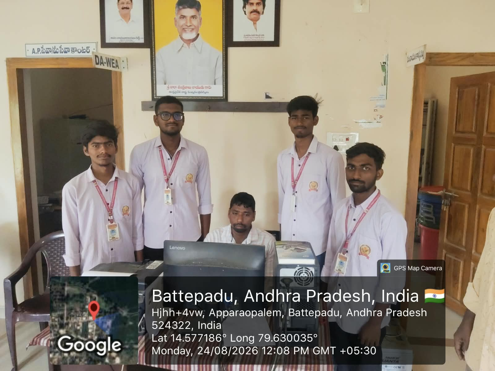
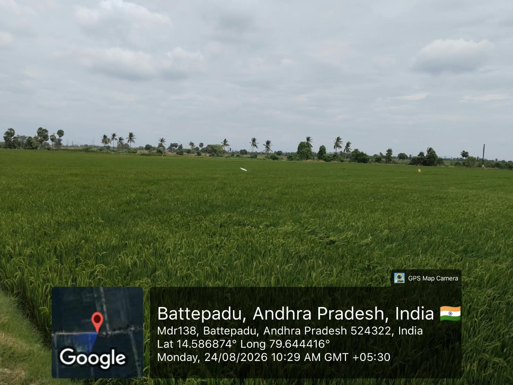
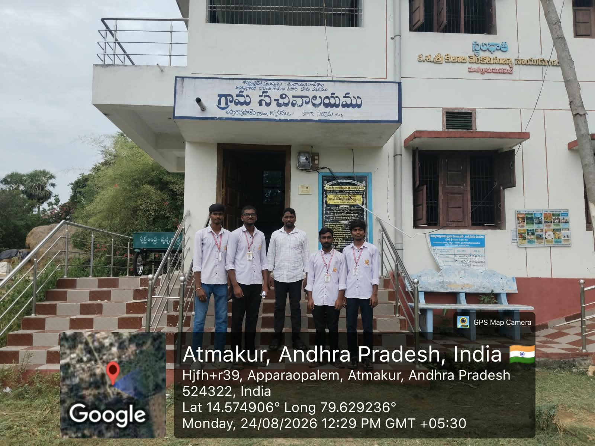
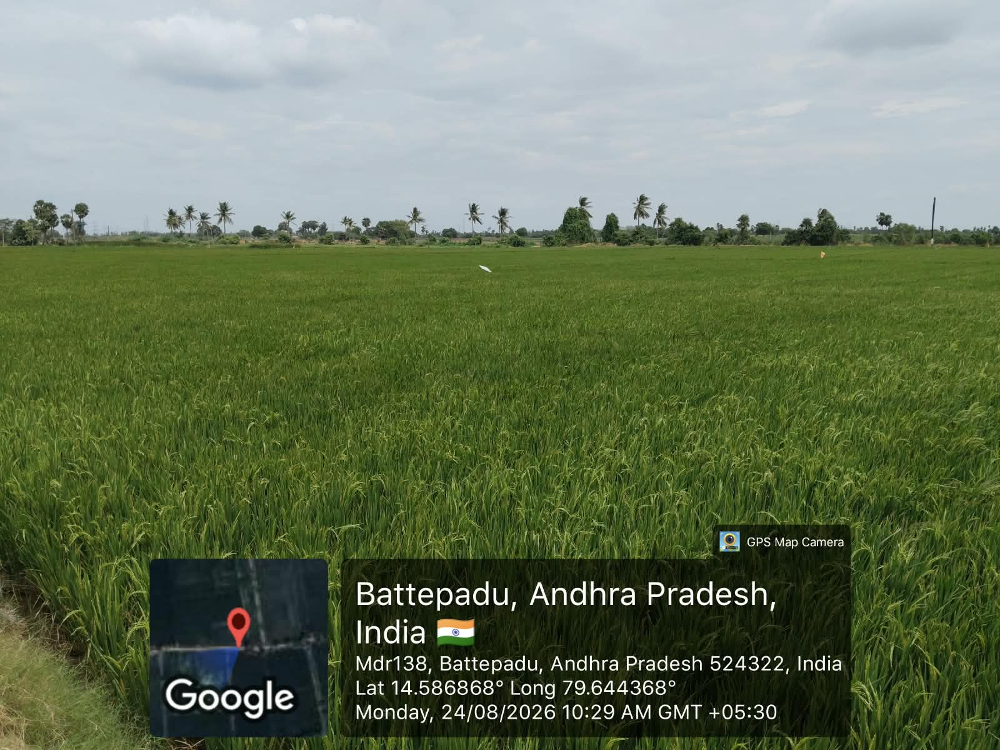

Community Service Project
Week 1 Report
Taking formal permission at Sachivalayam to begin the community-based organic farming study.
| Day | Activity | Observations / Notes |
|---|---|---|
| Day 1 | Visited the Sachivalayam. | Approached the office respectfully to request permission for the Community Service Project. |
| Day 2 | Explained the project purpose. | Described our plan to study natural and conventional paddy farming practices in the local community. |
| Day 3 | Presented the community study plan. | Explained that field visits, farmer interaction, crop observation, and documentation would be carried out. |
| Day 4 | Understood the permission process. | Learned why official approval and responsible communication are important for community-based agricultural work. |
| Day 5 | Received approval to begin. | Obtained permission to continue the organic farming study and start the planned field activities. |
Image Gallery



